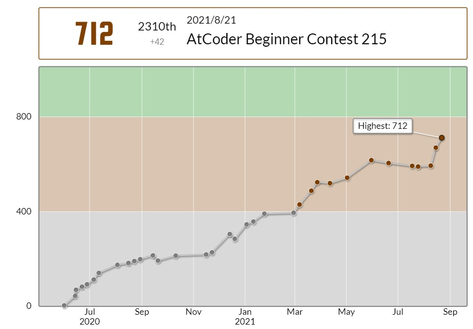
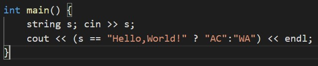

そろそろ8問体制のABCにも慣れてきました。(まあ解ける問題数は変わんないんだけど...)
ただ今回は全体的に問題の難易度がならされていて、C, D問題も比較的簡単だった気がします。(直大さんもそういう主旨のツイートをしていました。)
ABC作問に関わってないけど、８問コンテストの予定で言うと、過去４回で、上振れ・上振れ・上振れ・ちょうど良い、って感じで、ようやくちょうど良い感じのが来て安心してる。たまには下振れてもいいのよ。
— chokudai(高橋 直大)🍆 (@chokudai) August 21, 2021
今回は4完2WAでレートが712(+42)になりました。最近調子が良くてウレピイです。
A - Your First Judge
特に言うことはないです。こういう問題はテストケースを確認しないで提出していいと思うのですが、タイプミスが怖いので結局全部試してから提出してます。
B - log2(N)
WAしました。
いやちょっと言い訳させてほしいんですけど、題名ひどくないですか？？